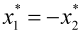

|
|
|


齿廓变位系数
刀具可在制造过程中进行调整。生产节圆与刀具基准线之间的距离称为变位量。要产生正变位，需将刀具从材料中进一步拉出，从而得到齿根较厚、齿顶较窄的轮齿。要产生负变位，需将刀具进一步推入材料，其结果是轮齿变窄，且可能更早出现根切。小齿轮和齿轮的系数如下：

如果点击“转换”按钮，KISSsoft 将确定变位系数是取自测量数据还是图纸中给定的值。
以下选项可用：
- 公法线长度：输入公法线长度和跨齿数。此选项不能用于（内）斜齿轮轮齿，因为其公法线长度无法测量。
- 跨球距：输入尺寸和球径。对于斜齿轮轮齿且齿数为奇数的齿轮，跨球距不等于两针测量值。参见跨棒距。
- 跨棒距：输入尺寸和棒直径。对于斜齿轮轮齿和齿数为奇数的齿轮，还必须输入最小跨距，以便能够进行测量。跨棒距无法在内斜齿轮中测量。
- 齿顶圆：这是一种相当不精确的计算，因为齿顶圆并不总是仅取决于变位系数。
- 分度圆齿厚：在此指定齿厚。您还可以输入弧长或弦长，并指定该值是在端面截面还是法向截面中。
- 任意直径处齿厚：在此指定法向截面中任意直径处的弦齿厚，该直径由弦上高度 ha（从 da 起，不含余量）定义。如果齿厚不是在参考直径处，而只是在任意直径处存在，请使用此选项。它也可用于插齿刀，以获得变位系数。尽管这种换算很精确，但由于它基于迭代过程，在某些情况下可能会产生微小偏差。
注意
轴和轮毂的变位系数必须相同。
Profile shift coefficient
The tool can be adjusted during the manufacturing process. The distance between the production pitch circle and the tool reference line is called the profile shift. To create a positive profile shift, the tool is pulled further out of the material, creating a tooth that is thicker at the root and narrower at the tip. To create a negative profile shift, the tool is pushed further into the material, with the result that the tooth is narrower and undercutting may occur sooner. For pinion and gear factors:
If you click the Convert button, KISSsoft will determine whether the profile shift coefficients are to be taken from measured data or from values given in drawings.
The following options are available:
- Base tangent length: Enter the base tangent length and the number of teeth spanned. This option cannot be used for (internal) helical gear teeth because their base tangent length cannot be measured.
- Measurement over balls: Enter the dimension and the diameter of the ball. In a gear with helical gear teeth and an odd number of teeth, the measurement over balls is not the same as the measurement over two pins. See Measurement over pins.
- Measurement over pins: Input the dimension and the diameter of the pin. You must also enter a minimum span for helical gear teeth and gears with an odd number of teeth, so the measurement can be performed. The measurement over pins cannot be measured in internal helical gears.
- Tip circle: This is a rather imprecise calculation because the tip circle does not always depend solely on the profile shift.
- Tooth thickness at reference circle: Here, you specify the tooth thickness. You can also enter the arc length or chordal length, and specify whether the value is in transverse or normal section.
- Tooth thickness at arbitrary diameter: Here you specify the chordal tooth thickness in normal section at an arbitrary diameter that is defined by the height above chord ha (from da without allowances). Use this option if the tooth thickness is not present at the reference diameter, but only at an arbitrary diameter. It can be used for the pinion type cutters as well to obtain the profile shift coefficient. Although this conversion is accurate, the fact that it is based on an iterative process may result in minor deviations in some cases.
Note
The profile shift coefficient of the shaft and hub must be the same value.